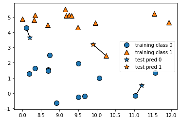
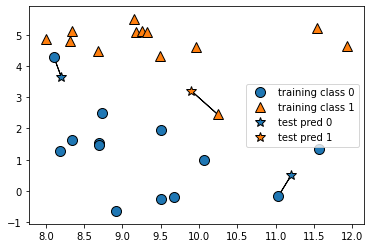
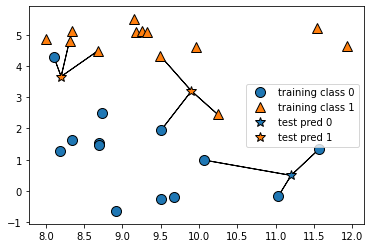
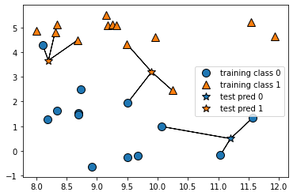
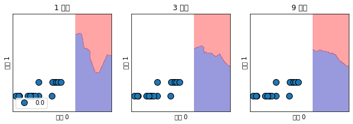

KNN Algorithm
4 weeks by kdh
Table of Contents
1 K Nearest Neighbors (최근접 이웃 알고리즘)
가장 쉬운 알고리즘 중 하나이다. 지도학습에 속한다. 훈련하는 과정이 없다. lazy algorithm이라 표현하기도 한다. 분류 의 기본적인 알고리즘이다.
새로운 데이터를 입력 받았을 때, 해당 데이터와 가장 가까운 데이터들을 확인하고, 그 중, 많은(빈도가 높은) 데이터의 종류에 따라 분류하는 알고리즘
k값(사용자가 정함): 가장 가까운 이웃을 몇개 확인해 볼 것인가. 이 k값에서 가장 많은 이웃의 종류에 따라 새로운 데이터를 분류.
k값을 전체값으로 할 경우는 새로운 데이러를 어느쪽 분류로 해야할까? 가장 가깝고 가장 많은 이웃으로..
기본적으로(상식적으로) k는 통상 홀수를 따라 간다. 최소 3부터 시작한다. 이게 끝.
데이터간 거리는 어떻게 구할 것인가? 피타고라스의 정리.. 단순히 거리 인가보다.
1.1 mglearn 패키지 설치
pip install mglearn
1.2 실습
# mglearn 패키지를 임포트한다. import mglearn # matplotlib 패키지들내에 pyplot 패키지를 임포트해서 plt이름을 이용해서 쓰겠다. import matplotlib.pyplot as plt # /Users/sroh/.pyenv/versions/anaconda3-5.3.1/envs/uiap/lib/python3.7/site-packages/sklearn/utils/deprecation.py:86: # FutureWarning: Function make_blobs is deprecated; Please import # make_blobs directly from scikit-learn warnings.warn(msg, category=FutureWarning) # 실행이 안되고 warning으로 sklearn 데이터셋에서 make_blobs 함수를 직접 임포트하라고 한다. # knn 알고리즘을 이용한 분류로 가장가까운 한개를 찾는다. mglearn.plots.plot_knn_classification(n_neighbors=1)
 ]]
]]
 ]]
]]
]]
]]
# knn 알고리즘을 이용한 분류로 가장가까운 한개를 찾는다. mglearn.plots.plot_knn_classification(n_neighbors=3)
 ]]
]]
]]
]]
 ]]
]]
# train_test_split한수는 train셋과 test셋을 구분해준다.
from sklearn.model_selection import train_test_split
X, y = mglearn.datasets.make_forge()
# random하게 나누지 않는다. 왜냐하면 같은 값이 나와야 비교가 되므로..
X_train, X_test, y_train, y_test = train_test_split(X, y, random_state=0)
from sklearn.neighbors import KNeighborsClassifier
clf = KNeighborsClassifier(n_neighbors=3)
# fit은 학습시키는 함수
clf.fit(X_train, y_train)
print("테스트 세트 예측:", clf.predict(X_test))
print("테스트 세트 정확도: {:.2f}", clf.score(X_test, y_test))
fig, axes = plt.subplots(1, 3, figsize=(10, 3))
for n_neighbors, ax in zip([1, 3, 9], axes):
# fit 메소들는 self 오브젝트를 리턴합니다.
# 그래서 객체 생성과 fit 메소드를 한 줄에 쓸 수 있습니다.
clf = KNeighborsClassifier(n_neighbors=n_neighbors).fit(X, y)
mglearn.plots.plot_2d_separator(clf, X, fill=True, eps=0.5, ax=ax, alpha=.4)
mglearn.discrete_scatter(X[:, 1], y, ax=ax)
ax.set_title("{} 이웃".format(n_neighbors))
ax.set_xlabel("특성 0")
ax.set_ylabel("특성 1")
axes[0].legend(loc=3)
[[file:# Out[24]:
<matplotlib.legend.Legend at 0x7fe60a3f4ba8>
 ]]
]]
<matplotlib.legend.Legend at 0x7fe60a96b390>
]]